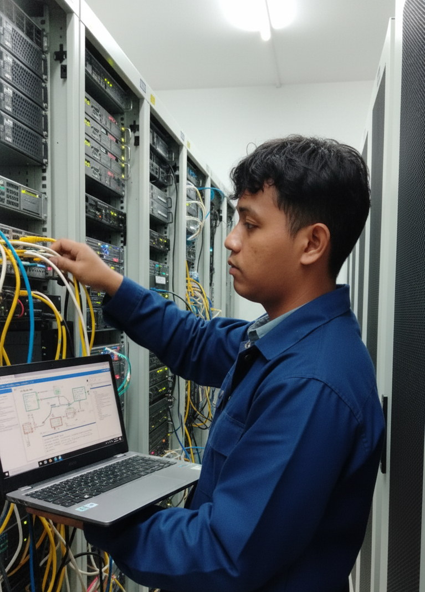
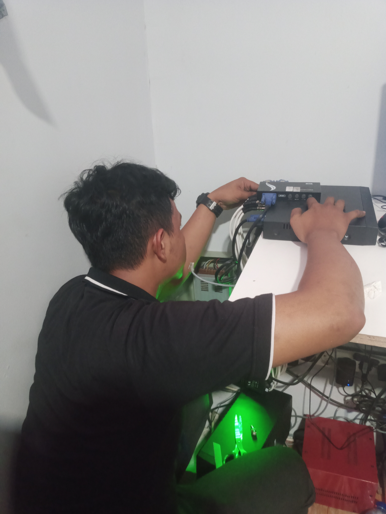
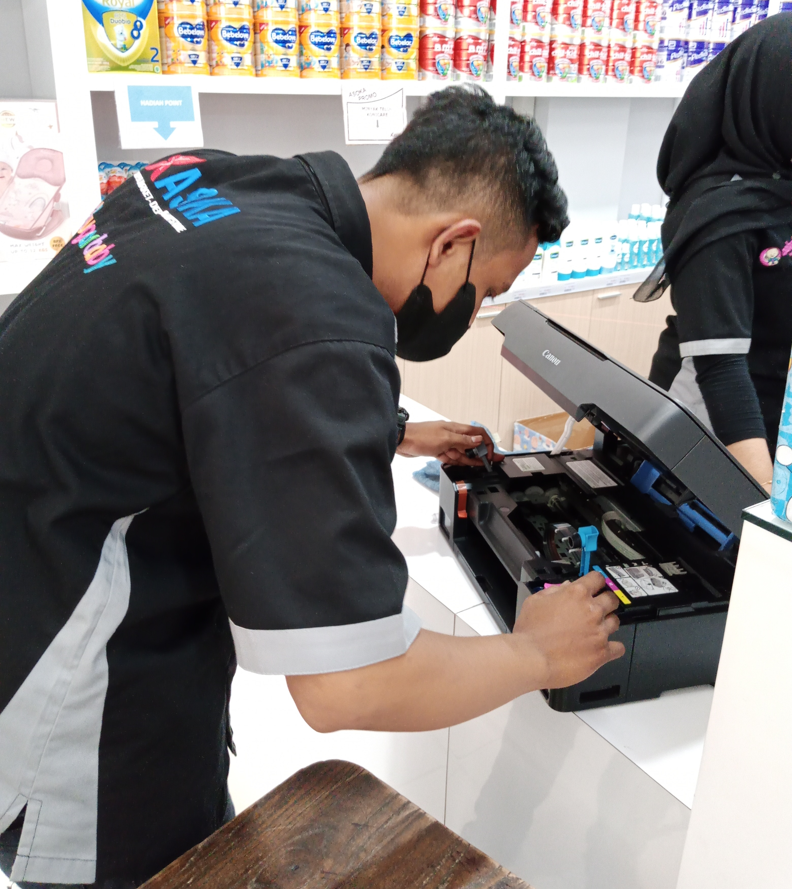
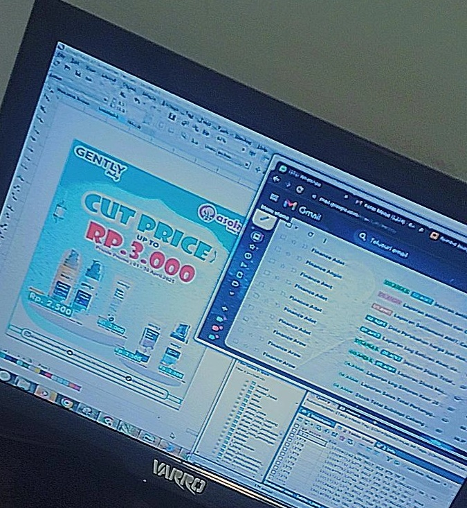
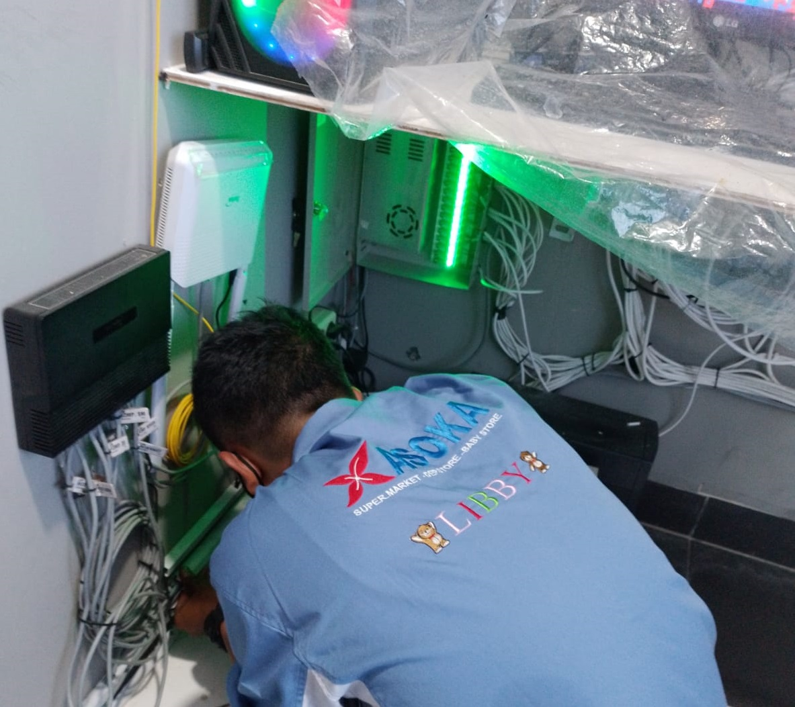

Proyek yang Pernah Saya Kerjakan

Sistem Pemantauan Jaringan
Membuat sistem pemantauan jaringan internal kantor untuk memastikan koneksi stabil dan cepat.
Lihat Detail

Instalasi & Maintenance CCTV
Melakukan pemasangan, konfigurasi, dan perawatan sistem CCTV di lingkungan perusahaan.
Lihat Detail
Perawatan & Troubleshooting PC
Menangani perawatan berkala, perakitan, serta troubleshooting perangkat komputer.
Lihat Detail

Perbaikan Printer
Memperbaiki Printer yang RUSAK, dan mmemecahkan troubleshooting lalu dokumentasi, dan laporan untuk pengajuan Sparepart.
Lihat Detail

Desain Brosur & Poster Digital
Membuat desain promosi digital yang menarik dan profesional menggunakan Photoshop & CorelDrawX7.
Lihat Detail

Optimalisasi Infrastruktur IT
Menyusun ulang infrastruktur jaringan dan perangkat agar efisien serta hemat biaya operasional.
Lihat Detail